Code
# Load the library "rstanarm" to fit Bayesian linear models using the function
# stan_glm()
library(rstanarm) Load R-libraries
# Load the library "rstanarm" to fit Bayesian linear models using the function
# stan_glm()
library(rstanarm) lowess())lm() calls it Residual standard errorglm() calls it dispersion parameter and reports it squared (variance)stan_glm() calls it \(\sigma\)stan_glm(): Understand output and how to obtain compatibility intervals using the function posterior_interval()Readings.
# These are just examples
x <- c(1, 2, 3, 4, 5, 6, 7)
ylin <- c(2, 3, 4, 5, 6, 7, 8)
ymon <- c(2, 2.1, 4.7, 5.1, 5.2, 5.5, 8)
plot(x, x, pch = '', ylim = c(0, 8), ylab = 'ylin (black), ymon (blue)')
points(x, ylin, type = 'b')
points(x, ymon, type = 'b', col = 'blue')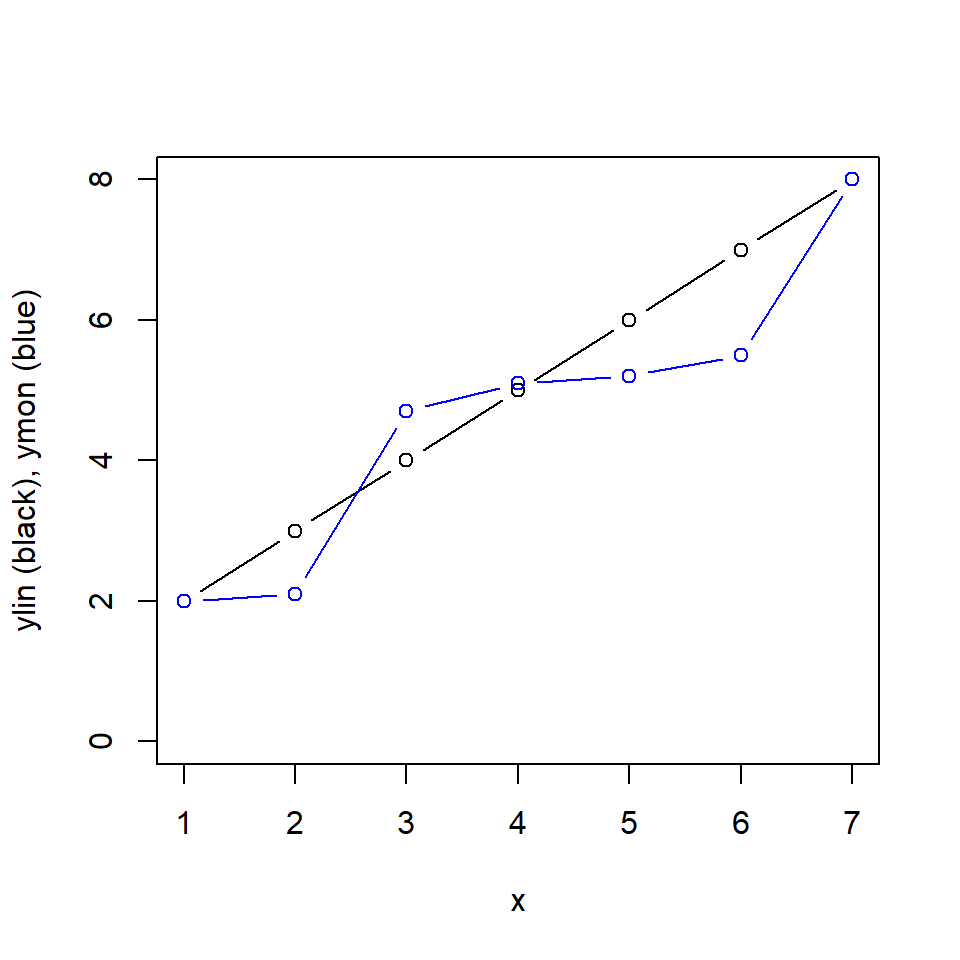
# Correlation matrix
rr <- data.frame(x, ylin, ymon) # Put variables in a data frame
round(cor(rr, method = 'pearson'),2) x ylin ymon
x 1.00 1.00 0.94
ylin 1.00 1.00 0.94
ymon 0.94 0.94 1.00cor(rr, method = 'spearman') x ylin ymon
x 1 1 1
ylin 1 1 1
ymon 1 1 1# Get Anscombe's quartet data, it's in R
d <- anscombe
# Plot the quartet using this function
myplot <- function(x, y) {
plot(x, y, xlim = c(4, 20), ylim = c(3, 13), pch = 21, bg = 'darkgrey')
mfit <- lm(y ~ x)
abline(mfit)
pear <- cor(x, y, method = 'pearson')
spear <- cor(x, y, method = 'spearman')
text(18, 5, round(pear, 2))
text(18, 4, round(spear, 2), col = 'lightblue') #Spearman in blue
}
# Fix default settings of plotting: 2x2 panels and fix margins of figures
par(mfrow = c(2,2), mar = c(5, 4, 1, 1))
# Use function to plot
myplot(d$x1, d$y1)
myplot(d$x2, d$y2)
myplot(d$x3, d$y3)
myplot(d$x4, d$y4)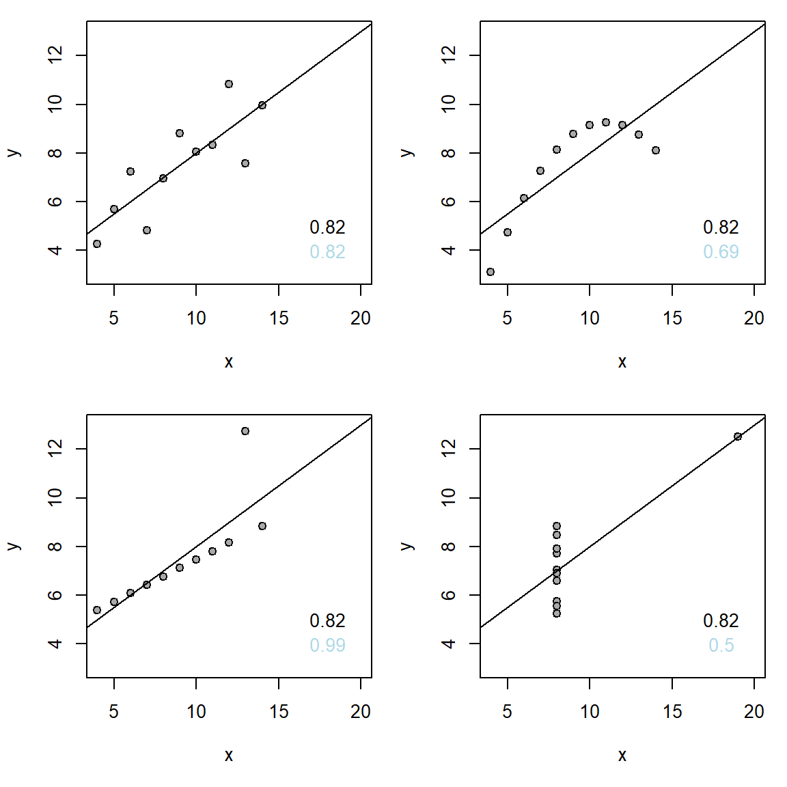
Example using data from Howell (2012) (Fig 9.2).
# Data: Pace of life and Incidence of Heart Disease in 36 US cities
pace <- c(27.67, 25.33,23.67, 26.33, 26.33, 25.00, 26.67, 26.33, 24.33, 25.67,
22.67, 25.00, 26.00, 24.00, 26.33, 20.00, 24.67, 24.00, 24.00, 20.67,
22.33, 22.00, 19.33, 19.67, 23.33, 22.33, 20.33, 23.33, 20.33, 22.67,
20.33, 22.00, 20.00, 18.00, 16.67, 15.00)
heart <- c(24, 29, 31, 26, 26, 20, 17, 19, 26, 24, 26, 25, 14, 11, 19, 24, 20, 13,
20, 18, 16, 19, 23, 11, 27, 18, 15, 20, 18, 21, 11, 14, 19, 15, 18, 16)# Plot data (Fig. 9.2)
plot(pace, heart, xlab = "Pace of life [a.u.]",
ylab = "Age-adjusted rate of heart disease")
# Draw smoothing curve
lines(lowess(pace, heart), col = "blue", lty = 1)
# Draw linear regression line
abline(lm(heart ~ pace), lty = 2)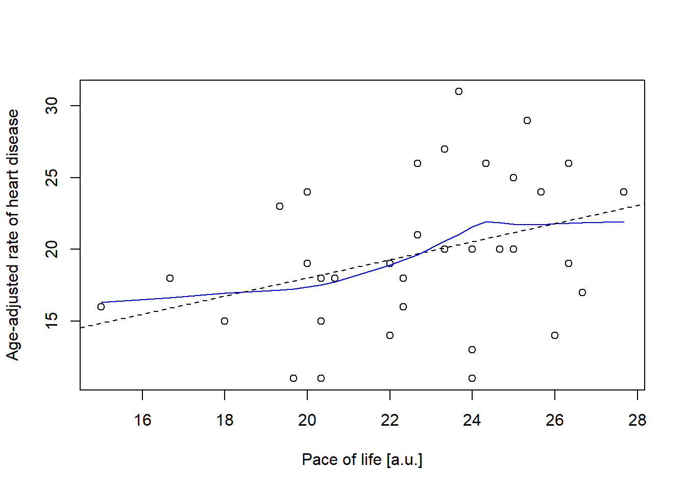
This section is optional (no exam questions on Bootstrapping!).
Below example how to do derive a confidence interval around Spearman’s rho with Bootstrapping. Data is on activity of cats and their preference for food-puzzles (this is data from a paper discussed at previous year’s Research methods 1.)
# Function that takes random pairs of observations from the sample with
# replacement and calculates a correlation. m = number of observations in the
# sample = nrow(d)
do_stat <- function(){
rownumber <- sample(length(pace), size = length(pace), replace = TRUE)
pp <- pace[rownumber]
hh <- heart[rownumber]
cor(pp, hh, method = "spearman") # Please try method = "pearson"
}
# Data
activity <- c(4286.30, 5548.30, 10122.30, 6306.48, 3631.64, NA, 3745.55, 4143.21,
3895.82, 5147.45, 4656.12, 3843.03, 5655.86, 4820.61, 6723.03,
3447.50, 3710.67)
cf_time <- c(0.665540690, 0.457864800, 0.344189459, 0.774329406, 0.062175325,
0.438901412, 0.869390384, 0.064502761, 0.661828747, 0.123849917,
0.486835855, 0.016898694, 0.005084774, 0.210401442, 0.138330489,
0.001552313, 0.326076928)
cats <- data.frame(activity, cf_time)
cats <- cats[complete.cases(cats), ] # Remove rows with missing data
# Plot relationship
plot(cats$activity, cats$cf_time, pch = 21, bg = "grey", ylim = c(0, 1),
xlab = "Cat activity [activity measure from some device]",
ylab = "Proportion time spent on food puzzle (vs. tray)")
# Add smoothing curve to plot
lines(lowess(cats$activity, cats$cf_time), col = "blue", lty = 2)
# Add spearman coef all data, and with extreme x-value removed
spear <- cor(cats$activity, cats$cf_time, method = "spearman")
spear2 <- cor(cats$activity[cats$activity < 9000],
cats$cf_time[cats$activity < 9000],
method = "spearman", use = "pairwise.complete.obs")
text(x = 8500, y = 0.95,
sprintf("Spearman's rho = %0.2f \n(with extreme x-value removed: %0.2f)",
spear, spear2), cex = 0.9)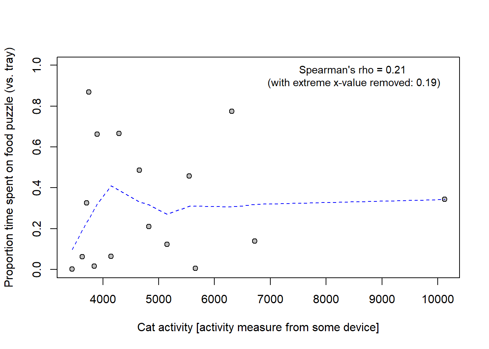
Bootstrap 95 % CI:
do_stat <- function(){
rownumber <- sample(nrow(cats), size = nrow(cats), replace = TRUE)
cc <- cats[rownumber, ] # Select rows from data frame
cor(cc$activity, cc$cf_time, method = "spearman")
}
# Do the bootstrap
set.seed(123)
boots <- replicate(n = 1e4, do_stat())
# Calculate confidence interval
hist(boots, breaks = 100, main = "Bootstrapped Spearman's rho")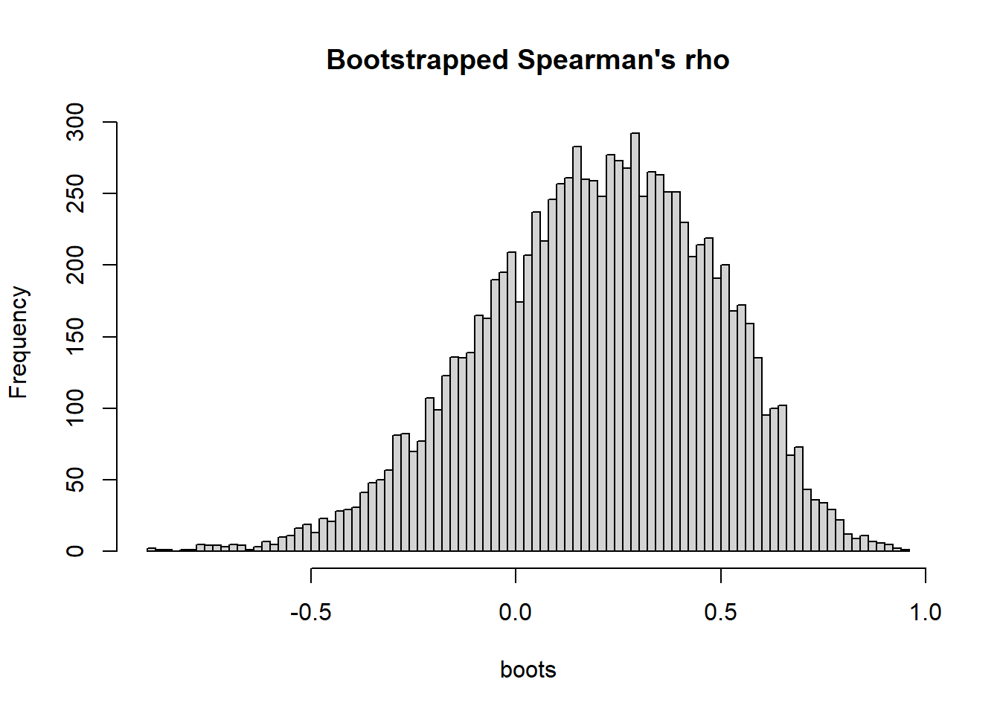
bootci <- quantile(boots, probs = c(0.025, 0.975))
round(bootci, 2) 2.5% 97.5%
-0.38 0.69 My interpretation: The result was inconclusive with regard to a monotonic relationship between activity and relative time spent on the food puzzle. Spearman’s rho was positive (0.21), but the compatibility interval [-0.38, 0.69] was wide and included substantial negative as well as positive coefficients.
Compare with the author’s (questionable) interpretation : “There was no correlation between CFtime and activity, Spearman correlation coefficient r(16) = 0.21, p = 0.44.”
Basic regression model (Gelman et al., 2021, p. 81):
\(y = b_0 + b_1x + \epsilon\),
where \(b_0\) and \(b_1\) are regression coefficients, and \(\epsilon\) is “error” or variability not related to the predictor \(x\). (See below, General Linear Model for additional assumptions and a more transparent notation of the model, where “error” will be called \(\sigma\)).
In this course we will also consider four extensions of this basic model, namely
We will simulate some data. I am using the code from Gelman et al. (2020; Section 6.2, p. 82).
set.seed(123) # set.seed() not given in the book, so we cannot reproduce exactly!
x <- 1:20
n <- length(x)
a <- 0.2 # Intercept
b <- 0.3 # Slope
sigma <- 0.5 # This is the "error" component (epsilon)
y <- a + b*x + rnorm(n, mean = 0, sd = sigma) # Note: Gelman et al.
# coded the last term
# + sigma*rnorm(n); same thing.
fake <- data.frame(x, y)
# Scatter plot
plot(fake$x, fake$y, pch = 21, bg = "grey")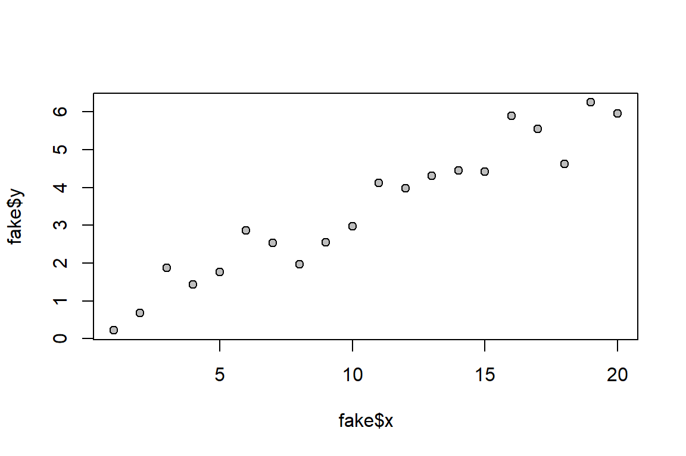
Below I use the lm() function to fit a line to the data.
fit_1 <- lm(y ~ x)
summary(fit_1) # Summary stat
Call:
lm(formula = y ~ x)
Residuals:
Min 1Q Median 3Q Max
-0.99395 -0.30140 -0.01884 0.25971 0.86677
Coefficients:
Estimate Std. Error t value Pr(>|t|)
(Intercept) 0.35505 0.23100 1.537 0.142
x 0.29198 0.01928 15.141 1.1e-11 ***
---
Signif. codes: 0 '***' 0.001 '**' 0.01 '*' 0.05 '.' 0.1 ' ' 1
Residual standard error: 0.4973 on 18 degrees of freedom
Multiple R-squared: 0.9272, Adjusted R-squared: 0.9232
F-statistic: 229.3 on 1 and 18 DF, p-value: 1.102e-11confint(fit_1) # Confidence intervals (we call them "compatibility intervals") 2.5 % 97.5 %
(Intercept) -0.1302658 0.8403583
x 0.2514646 0.3324908Here a plot corresponding to Gelman et al.’s Fig. 6.1.
plot(fake$x, fake$y, main = "Data and fitted regression line",
pch = 21, bg = "grey") # Plot data
abline(fit_1) # Add regression line
# Add text with regression equation
a_hat <- fit_1$coefficients[1] # Intercept
b_hat <- fit_1$coefficients[2] # Slope
equation <- sprintf("y = %.2f + %.2fx", a_hat, b_hat) # As text
text(mean(fake$x) + 0.5, mean(fake$y), equation, adj = 0, cex = 0.8)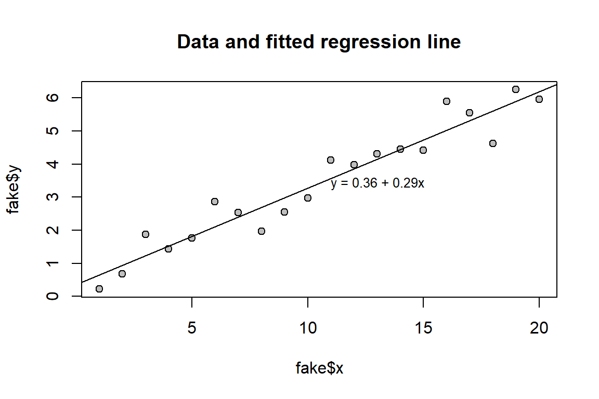
Here I fit the same model as above using stan_glm(). See, Gelman et al. p. 82, but note that I added the option refresh = 0 in stan_glm() to suppress the Stan’s sampling-progress output.
fit_1 <- stan_glm(y ~ x, data = fake, refresh = 0) # library(rstanarm)
print(fit_1, digits = 2)stan_glm
family: gaussian [identity]
formula: y ~ x
observations: 20
predictors: 2
------
Median MAD_SD
(Intercept) 0.36 0.24
x 0.29 0.02
Auxiliary parameter(s):
Median MAD_SD
sigma 0.52 0.09
------
* For help interpreting the printed output see ?print.stanreg
* For info on the priors used see ?prior_summary.stanreg# "Posterior uncertainty intervals"", often called "credible interval", but we
# call them "Compatibility intervals"!
ci95 <- posterior_interval(fit_1, prob = 0.95)
round(ci95, 3) 2.5% 97.5%
(Intercept) -0.117 0.870
x 0.249 0.332
sigma 0.383 0.768Here is a table corresponding to Gelman et al.’s Fig. 6.2, but I added a column for compatibility intervals
| Parameter | Assumed value | Estimate | Uncertainty | 95 % CI |
|---|---|---|---|---|
| \(a\) | 0.2 | 0.36 | 0.24 | [-0.12, 0.87] |
| \(b\) | 0.3 | 0.29 | 0.02 | [0.25, 0.33] |
| \(\sigma\) | 0.5 | 0.52 | 0.09 | [0.38, 0.77] |
Note.
The intercept is the predicted mean value of the outcome when x = 0. The regression coefficient (“slope”) represents the difference in the outcome for each one-unit difference in the predictor. Example: If the outcome is weight (measured in kg) and the predictor is height (measured in cm), the slope’s unit would be kg/cm.
Note that the slope can always be interpreted as a comparison: It is a difference between the average outcomes of observations with predictor values of \(x+1\) vs. \(x\).
Sometimes the slope parameter can also be interpreted as a causal effect, for example, the between-group difference in a randomized experiment. If the treatment variable, T, is an indicator with treatment group coded 1 and control group coded 0, the regression coefficient for T can be interpreted as the average causal effect of the treatment on the outcome. This may be viewed as an estimate of the average difference between potential outcomes: one where everyone was tested under the treatment condition and another where everyone was tested under the control condition. Interpreting the observed coefficient as a causal-effect estimate requires strong assumptions. Therefore, it is generally safer to interpret a regression parameter as a difference between groups rather than as a causal effect. See section 6.3 and elsewhere in Gelman et al. (2021).
Simulating fake data on students who take two tests, see Gelman et al., p.89.
set.seed(123)
n <- 1000
true_ability <- rnorm(n, mean = 50, sd = 10)
noise_1 <- rnorm(n, mean = 0, sd = 10)
noise_2 <- rnorm(n, mean = 0, sd = 10)
midterm <- true_ability + noise_1
final <- true_ability + noise_2
exams <- data.frame(midterm, final)
head(exams) midterm final
1 34.43726 39.27921
2 37.29867 50.06760
3 65.40728 60.17119
4 49.38333 62.89736
5 25.79945 53.03424
6 77.55638 60.99797Plot data and add a regression line
# Scatter plot
plot(exams$midterm, exams$final, pch = 21, bg = "white")
# Regression analysis to fit line to data
fit_1 <- stan_glm(final ~ midterm, data = exams, refresh = 0)
# Add lines to plot
abline(coef(fit_1))
xyline <- lines(0:100, 0:100, lty = 3, col = "blue") # Line x = y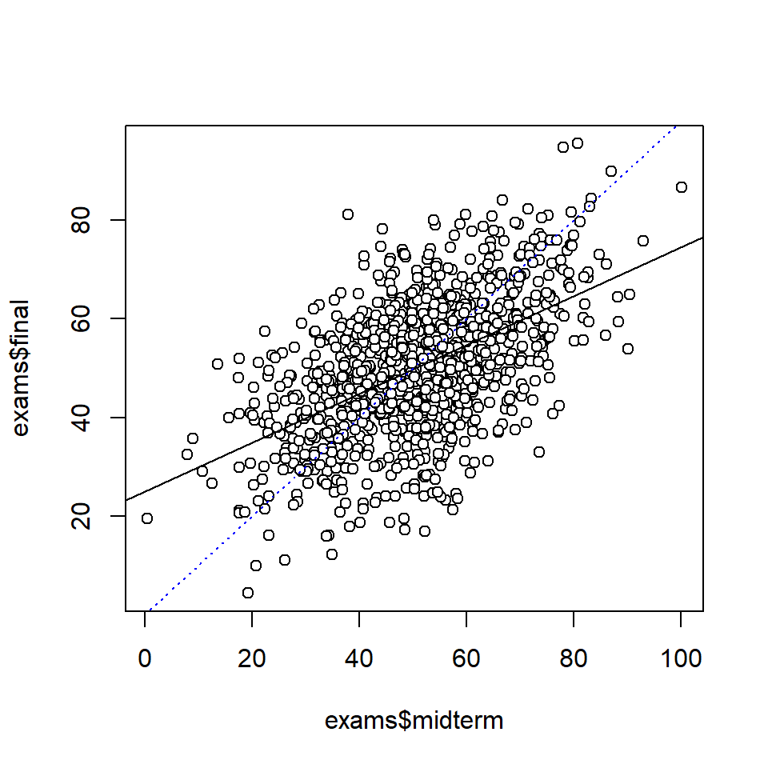
# Show regression estimates
print(fit_1, digits = 2)stan_glm
family: gaussian [identity]
formula: final ~ midterm
observations: 1000
predictors: 2
------
Median MAD_SD
(Intercept) 24.91 1.37
midterm 0.50 0.03
Auxiliary parameter(s):
Median MAD_SD
sigma 11.72 0.27
------
* For help interpreting the printed output see ?print.stanreg
* For info on the priors used see ?prior_summary.stanreground(posterior_interval(fit_1, prob = 0.95), 2) 2.5% 97.5%
(Intercept) 22.27 27.63
midterm 0.44 0.54
sigma 11.22 12.26Note: Regression analysis actually assume that there is no measurement error in the predictor. So this assumption was violated by the analysis above. However, for prediction of final exam scores from mid-term exam scores, it make sense to treat the latter as fixed, simply because they are fixed (as exam scores tend to be).
All models are wrong, but some are useful(Box (1979))
The basic regression model (see Gelman et al., 2021, p. 81):
\(y_i = b_0 + b_1x_i + \epsilon_i\), for \(i = 1, 2, ..., n\) observations.
We typically assume that the “errors”, \(\epsilon_i\), are independent and normally distributed with mean = 0 and a fixed standard deviation \(\sigma\):
\(\epsilon_i \sim Normal(0, \sigma)\).
Given these assumptions, we can write the linear regression model as:
\(y_i \sim Normal(\mu_i, \sigma)\)
\(\mu_i = b_0 + b_1x_i\)
The first line is the probabilistic part of the model, sometimes called the likelihood, that relates to irreducible “error”, that is, variation around predicted values (implied by \(\sigma)\)).
The second line is the deterministic part, we will call it the linear predictor of the model. It gives the predicted mean \(\mu_i\) of observations for given value of the predictor, \(x_i\) (or values of several predictors when we move to multiple regression),
The model imply infinitely many normal distributions, one for each possible value of x, and each with the same standard deviation (an assumption known as homoscedasticity).
Here these model implications are illustrated for a few x-values: 10, 20, …, 90.
(Code only for nerds.)
# Simulate data
set.seed(123)
x <- rep(seq(1, 100, 2), 10)
x <- x + rnorm(length(x), mean = 0, sd = 1)
y <- rnorm(length(x), mean = 50, sd = 20) + 0.8*x
# Draw scattergram with regression line
mfit <- lm(y ~ x)
sd_res <- sd(mfit$residuals)
ylim = c(0, 200)
plot(x, y, ylim = ylim)
abline(mfit, lty = 1, col = "blue", lwd = 2)
# Add normal curves
drawnormal <- function(x_input) {
y_pred <- mfit$coefficients[1] + mfit$coefficients[2]*x_input
sd_res <- sd(mfit$residuals)
xx <- seq(y_pred - 3 * sd_res, y_pred + 3 * sd_res, 1)
dx <- x_input - dnorm(xx, mean = y_pred, sd = sd_res) * 200
lines(dx, xx, col = "blue", lwd = 2)
points(x_input, y_pred, pch = 21, bg = "blue", cex = 1.5)
lines(c(x_input, x_input), ylim, lty = 3, col = "blue" )
}
# Invisible() supresses unwanted output from sapply()
invisible(sapply(seq(10, 90, 10), drawnormal))
# Add regression equation
rect(0, 170, 29, 200, col = "white", border = NA) # White box
b0 <- round(mfit$coefficients[1], 1)
b1 <- round(mfit$coefficients[2], 1)
sres <- round(sd_res, 1)
equation1 = bquote(y[i] ~ "~" ~ Normal(mu[i], sigma == ~ .(sres)))
equation2 = bquote(mu[i] == ~ .(b0) ~ "+" ~ .(b1) ~ x[i])
text(1, 190, equation1, adj = 0, cex = 0.8, col = "blue")
text(1, 180, equation2, adj = 0, cex = 0.8, col = "blue")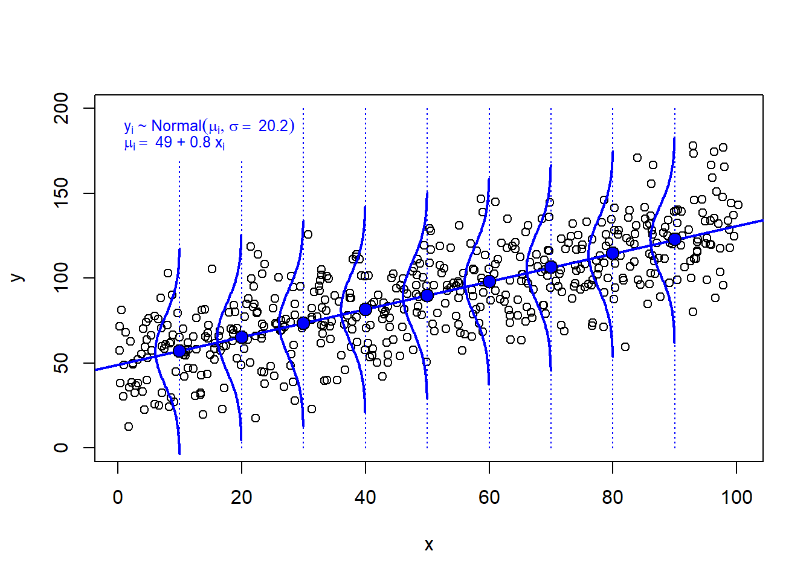
Three methods for estimating parameters of a regression model:
R we use lm() to obtain least square estimates.R, the most common choice is to use glm(). However, maximum likelihood estimation is the same as Bayesian inference without priors, and can be implemented in stan_glm() with non-default arguments, see Gelman et al. (2021), p. 110.R we can use stan_glm() to make Bayesian inference (using a Markov Chain Monte Carlo (MCMC) method). If the user does not specify priors, stan_glm() uses default priors.For reasonably large data sets, the three methods give very similar estimates, as illustrated below.
When faced with missing data, most software automatically applies a complete-case analysis—also known as list-wise deletion—by excluding all study units with missing values on any variables included in the regression model. This process is typically performed without warning, so it’s important to be mindful that it can result in a significant reduction in sample size. Additionally, it may introduce bias if the missingness is related to other variables, including those not measured, that could confound the relationship between the outcome and predictors.
If there is a substantial amount of missing data, it’s advisable to also perform analyses using a simple data imputation method (see Gelman et al. (2021), section 17.4; summarized in these notes, 11.4). Ideally, the interpretation of results will remain consistent. However, if the results change, careful consideration is required to determine the best course of action. In such cases, more advanced imputation methods may be necessary—refer to Gelman et al. (2021), section 17.5 for further guidance.
Data in figure above
# Here data again, so you don't have to search for it in the code above!
set.seed(123)
x <- rep(seq(1, 100, 2), 10)
x <- x + rnorm(length(x), mean = 0, sd = 1)
y <- rnorm(length(x), mean = 50, sd = 20) + 0.8*x
plot(x, y)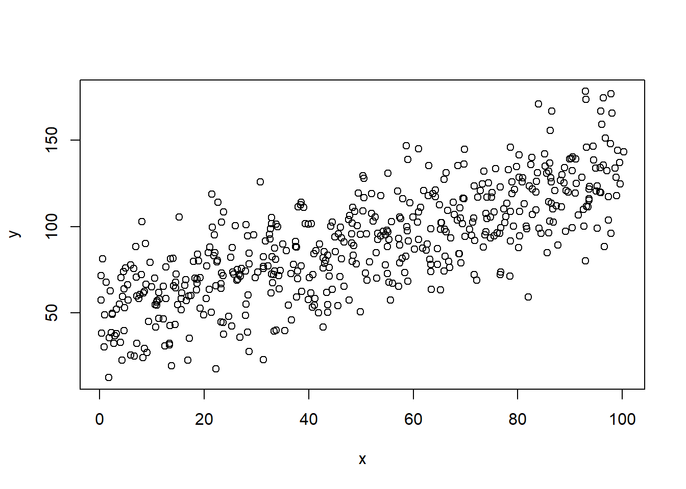
Model to be fitted to data:
\(y_i \sim Normal(\mu_i, \sigma)\)
\(\mu_i = b_0 + b_1x_i\)
Main task is to estimate intercept (\(b_0\)) and slope (\(b_1\)) of our linear model, \(\mu_i = b_0 + b_1x_i\). stan_glm() will also give us an estimate of the standard deviation around the line (sigma, \(\sigma\)).
Model fit, using lm()
# Data in data frame
dd <- data.frame(x, y)
# Model fit using lm(), i.e. Ordinary Least Squares
fit_lm <- lm(y ~ x, data = dd)
summary(fit_lm)
Call:
lm(formula = y ~ x, data = dd)
Residuals:
Min 1Q Median 3Q Max
-56.775 -13.776 0.144 12.880 53.079
Coefficients:
Estimate Std. Error t value Pr(>|t|)
(Intercept) 48.97230 1.81081 27.04 <2e-16 ***
x 0.81961 0.03135 26.14 <2e-16 ***
---
Signif. codes: 0 '***' 0.001 '**' 0.01 '*' 0.05 '.' 0.1 ' ' 1
Residual standard error: 20.23 on 498 degrees of freedom
Multiple R-squared: 0.5785, Adjusted R-squared: 0.5776
F-statistic: 683.5 on 1 and 498 DF, p-value: < 2.2e-16confint(fit_lm) 2.5 % 97.5 %
(Intercept) 45.4145258 52.5300794
x 0.7580113 0.8812017Model above, using glm()
fit_glm <- glm(y ~ x, data = dd)
summary(fit_glm)
Call:
glm(formula = y ~ x, data = dd)
Coefficients:
Estimate Std. Error t value Pr(>|t|)
(Intercept) 48.97230 1.81081 27.04 <2e-16 ***
x 0.81961 0.03135 26.14 <2e-16 ***
---
Signif. codes: 0 '***' 0.001 '**' 0.01 '*' 0.05 '.' 0.1 ' ' 1
(Dispersion parameter for gaussian family taken to be 409.2695)
Null deviance: 483544 on 499 degrees of freedom
Residual deviance: 203816 on 498 degrees of freedom
AIC: 4430.1
Number of Fisher Scoring iterations: 2confint(fit_glm) 2.5 % 97.5 %
(Intercept) 45.423172 52.521433
x 0.758161 0.881052Model above, using stan_glm()
dd <- data.frame(x, y) # stan_glm prefer data to be stored in a data frame
fit_stan_glm <- stan_glm(y ~ x, data = dd, seed = 123, refresh = 0)
print(fit_stan_glm, digits = 2)stan_glm
family: gaussian [identity]
formula: y ~ x
observations: 500
predictors: 2
------
Median MAD_SD
(Intercept) 49.01 1.83
x 0.82 0.03
Auxiliary parameter(s):
Median MAD_SD
sigma 20.26 0.63
------
* For help interpreting the printed output see ?print.stanreg
* For info on the priors used see ?prior_summary.stanreground(posterior_interval(fit_stan_glm, prob = 0.95), 3) 2.5% 97.5%
(Intercept) 45.458 52.519
x 0.759 0.881
sigma 19.060 21.622Below is for advanced users
stan_glm() does Bayesian estimation of the model parameters. In our simple example above, we have three parameters: Intercept (\(b_0\)), slope (\(b_1\)), and standard deviation around the regression line (\(\sigma\)). The stan_glm()-algorithm (called “Hamiltonian Monte Carlo”, HMC) samples many sets of parameters, each set with three values <\(b_0\), \(b_1\), \(\sigma\)>. HMC does this this in a clever way that assure that parameter-sets that fit the data better are more likely to be sampled. The default is to collect 4000 sets of parameters. The sampled parameters are stored and can be used for further data analysis.
Here an example, where I draw many regression lines, each a reasonable line given the data and default priors used by stan_glm() (default is weak priors, meaning that they will not yield estimates different from approaches like glm() that does not account for prior beliefs in the estimation).
# Data frame with sampled parameter values
ss <- data.frame(fit_stan_glm)
# Rename parameters according to model notation above
names(ss) <- c("b0", "b1", "sigma")
head(ss) b0 b1 sigma
1 46.38761 0.8591003 21.16674
2 50.51860 0.8152445 20.50395
3 50.27949 0.8287463 20.34503
4 50.32700 0.7915958 20.69936
5 52.26407 0.7799136 21.18584
6 52.26827 0.7778340 20.67591plot(dd$x, dd$y)
# Add a random sample of other lines. Use transparent color to see where most fall
n <- 50 # Number of lines to show
rrows <- sample(1:nrow(ss), size = n, replace = FALSE)
rlines <- ss[rrows, -3] # n lines
xx <- 1:100
# Add lines using for loop
for (j in 1:n) {
yy <- rlines[j, 1] + rlines[j, 2] * xx
lines(xx, yy, col = rgb(0, 1, 0, 0.2))
}
# Add "best" line, defined by point estimates of b0 and b1
abline(fit_stan_glm, lwd = 1.5) 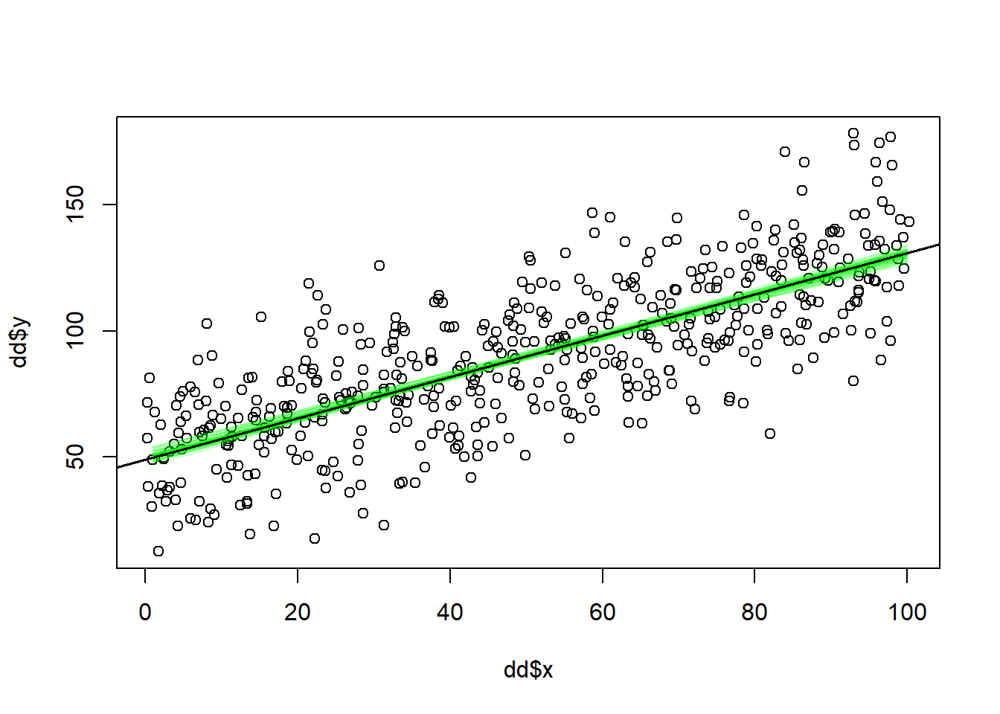
This code show the full posterior for the slope parameter, \(b_1\):
# This extract the parameter values that stan sampled from the posterior
# distribution using a specific Markow Chain Monte Carlo (MCMC) method called
# Hamiltonian Monte Carlo
ss <- data.frame(fit_stan_glm)
bx <- ss$x # Subset slope parameter
# Here a density plot of the sampled x coefficients. This is our estimate
# of the slope parameter.
# Plot density curve for sigma
plot(density(bx), xlab = "Slope parameter",
main = "Posterior probability: Slope parameter, with 95 and 50 % CI")
# Derive point estimate and compatibility interval
point_estimate <- median(bx) # This is summary value preferred by stan_glm
ci95 <- quantile(bx, prob = c(0.025, 0.975))
ci50 <- quantile(bx, prob = c(0.25, 0.75))
# Plot point estimate and compatibility interval
arrows(x0 = ci95[1], x1 = ci95[2], y0 = 0.01, y1 = 0.01,
length = 0, col = "blue")
arrows(x0 = ci50[1], x1 = ci50[2], y0 = 0.01, y1 = 0.01,
length = 0, col = "darkblue", lwd = 3)
points(point_estimate, 0.01, pch = 21, bg = 'lightblue') # Add point"
# Point estimate and MAD SD to confirm that the values are the same
# as stan_glm reported in print(fit_stan_glm)
post_mad <- mad(bx)
posterior_summary <- c(point_est = point_estimate, MAD_SD = post_mad)
# Add to plot
text2plot <- sprintf("Median = %.2f, MAD_SD = %.2f",
round(point_estimate, 2), round(post_mad, 2))
text(0.85, 10, text2plot, adj = 0, cex = 0.75)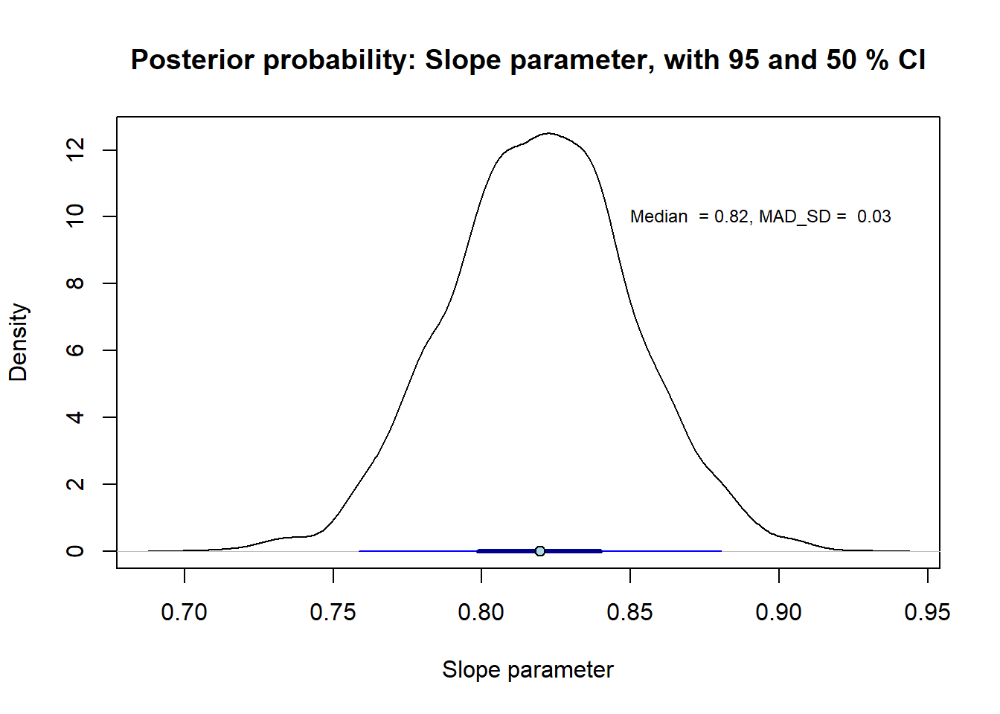
# Print to console
round(posterior_summary, 3)point_est MAD_SD
0.820 0.031 The practice problems are labeled Easy (E), Medium (M), and Hard (H), (as in McElreath (2020)).
8E1. Pearson’s coefficient of correlation, \(r_{x, y}\) is sometimes misleading. Illustrate this graphically in scattergrams for each of the examples below:
(Old exam question)
8E2.
8E3. Estimate by eye the intercept and slope of each of the four lines in the plot.
plot(0, 0, pch= "", xlab = "x", ylab = "y", xlim = c(2, 11), ylim =c(-10, 10))
abline(0, 1, col = "red", lty = 1)
abline(-2, -0.5, col = "blue", lty = 2)
abline(5, 0, col = "darkgreen", lty = 3)
abline(-10, 2, col = "black", lty = 4)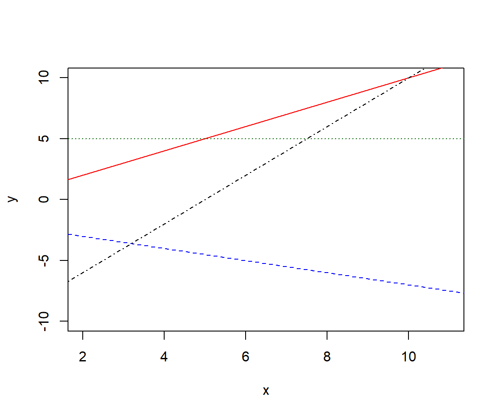
8E4. Draw lines illustrating these linear functions, assuming x is a continuous variable, and estimate by eye the values of \(b_0\), and \(b_1\) from your drawings.
8E5. Draw by hand scatter grams illustrating (made up) data and regression lines for these linear models. Assume x to be continuous and \(\epsilon_i \neq 0\). For each drawing, estimate by eye the values of \(b_0\), and \(b_1\).
8E6. Below are two scattergrams with a non-parametric smoothing function (lowess()). For each scatterplot, do you think a linear regression model would be appropriate? Please motivate.
set.seed(124)
par(mfrow = c(1, 2))
# Left
n <- 30
x <- runif(n, 0, 400)
y <- 200 - 0.4*x + rnorm(n, 0, 40)
plot(x, y, ylim = c(0, 300), xlim = c(0, 400))
lines(lowess(y ~ x), lty = 2, col = "red")
# Right
n <- 30
x <- runif(n, 0, 400)
y <- 200 - 0.4*x + 0.002*(x - mean(x))^2 + rnorm(n, 0, 50)
plot(x, y, ylim = c(0, 300), xlim = c(0, 400))
lines(lowess(y ~ x), lty = 2, col = "red")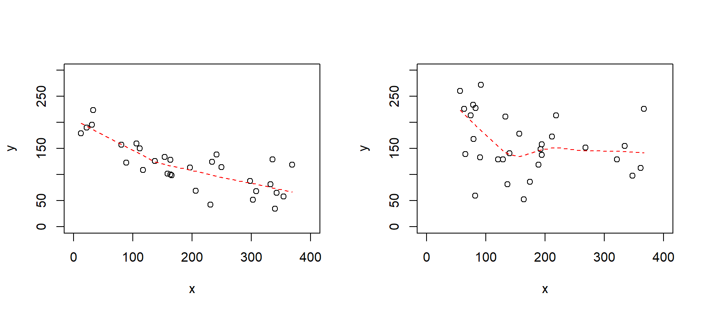
8M1. Below is the output from a regression analysis in R, estimating the relationship between reaction time (rt, in milliseconds) on a test and hours of sleep last night (ranging from 3 to 10 hours).
How many observations were there in this data set?
What function in R was used to do the regression analysis?
Draw a scattergram with the fitted line and some hypothetical data that appears consistent with the analysis output.
set.seed(123)
n <- 15
sleep <- runif(n, 3, 9)
rt <- 400 - 20*sleep + rnorm(n, 0, 30)
fit8m1 <- lm(rt ~ sleep)
summary(fit8m1)
Call:
lm(formula = rt ~ sleep)
Residuals:
Min 1Q Median 3Q Max
-56.925 -26.438 -1.428 20.938 72.771
Coefficients:
Estimate Std. Error t value Pr(>|t|)
(Intercept) 422.28 35.96 11.74 2.7e-08 ***
sleep -22.22 5.42 -4.10 0.00125 **
---
Signif. codes: 0 '***' 0.001 '**' 0.01 '*' 0.05 '.' 0.1 ' ' 1
Residual standard error: 35.26 on 13 degrees of freedom
Multiple R-squared: 0.5639, Adjusted R-squared: 0.5304
F-statistic: 16.81 on 1 and 13 DF, p-value: 0.0012538M2. Below are the 95% confidence intervals for the model in 8M1. In one sentence, describe the effect of sleep on reaction time (assuming a causal relationship), referencing both the point estimate (given above) and the interval estimate (below), and rounding the estimate to a reasonable level of precision. Ensure your phrasing aligns with the recommendations of Amrhein et al. (2019).
confint(fit8m1) 2.5 % 97.5 %
(Intercept) 344.59947 499.9547
sleep -33.92954 -10.51318M3. Draw by hand scatter grams illustrating (made up) data and regression lines for these linear models. Assume \(D\) to be an indicator variable coded {0, 1} and \(\epsilon_i \neq 0\). For each drawing, estimate by eye the values of \(b_0\), and \(b_1\).
8M4. Assume that you recoded \(D\) in 8M3, to have values {-1, 1}. What estimates would you then have for \(b_0\) and \(b_1\) in each of your drawings.
8M5. Gelman et al. talks about descriptive, predictive and causal interpretation of regression coefficients (page 85). Explain in your own words with reference to a model of well-being as a function of physical activity.
8M6. “Your outcome variable does not seem to be normally distributed, so linear regression would be inappropriate.” What’s wrong with this argument?
::: 8M7. Revisit the simulation of mid-term and final exam scores.
8M8. Rerun the fake-data simulation above from Gelman et al. (p.82), but increase the number of observations for each of the 20 x-values. Approximately how many observations per x-value would you need to correctly estimate (within 2 decimals) the true slope parameter most of the time?
8H1.
Relate the regression assumptions of linearity, normality and homoscedasticity to the model notation:
\(y_i \sim Normal(\mu_i, \sigma)\)
\(\mu_i = b_0 + b_1x_i\).
Follow up questions for the advanced student (this will not be on the exam!)
Sometimes, \(ind\) is added to the first line: \(y_i \overset{\text{ind}}{\sim} Normal(\mu_i, \sigma)\), why?
And why not: \(y_i \overset{\text{iid}}{\sim} Normal(\mu_i, \sigma)\)?
8H2. Go back to your simulation in 8M8.
8H3. Run a bivariate regression on some data (simulated or real) using stan_glm(), plot the data in a scattergram with a set of regression lines from the posterior distribution (see examples above and in Gelman et al, e.g., their Fig. 9.2)
8H4.
From 8H3,plot the posterior for the “standardized” slope \(\frac{b_1}{\sigma}\), and report median posterior with 90 % compatibility interval.
How does \(\frac{b_1}{\sigma}\) relate to Cohen’s d?
sessionInfo()R version 4.4.2 (2024-10-31 ucrt)
Platform: x86_64-w64-mingw32/x64
Running under: Windows 11 x64 (build 26100)
Matrix products: default
locale:
[1] LC_COLLATE=Swedish_Sweden.utf8 LC_CTYPE=Swedish_Sweden.utf8
[3] LC_MONETARY=Swedish_Sweden.utf8 LC_NUMERIC=C
[5] LC_TIME=Swedish_Sweden.utf8
time zone: Europe/Stockholm
tzcode source: internal
attached base packages:
[1] stats graphics grDevices utils datasets methods base
other attached packages:
[1] rstanarm_2.32.1 Rcpp_1.0.14
loaded via a namespace (and not attached):
[1] tidyselect_1.2.1 dplyr_1.1.4 farver_2.1.2
[4] loo_2.8.0 fastmap_1.2.0 tensorA_0.36.2.1
[7] shinystan_2.6.0 promises_1.3.3 shinyjs_2.1.0
[10] digest_0.6.37 mime_0.13 lifecycle_1.0.4
[13] StanHeaders_2.32.10 survival_3.7-0 magrittr_2.0.3
[16] posterior_1.6.1 compiler_4.4.2 rlang_1.1.6
[19] tools_4.4.2 igraph_2.1.4 yaml_2.3.10
[22] knitr_1.50 htmlwidgets_1.6.4 pkgbuild_1.4.8
[25] curl_6.4.0 plyr_1.8.9 RColorBrewer_1.1-3
[28] dygraphs_1.1.1.6 abind_1.4-8 miniUI_0.1.2
[31] grid_4.4.2 stats4_4.4.2 xts_0.14.1
[34] xtable_1.8-4 inline_0.3.21 ggplot2_3.5.2
[37] scales_1.4.0 gtools_3.9.5 MASS_7.3-61
[40] cli_3.6.5 rmarkdown_2.29 reformulas_0.4.1
[43] generics_0.1.4 RcppParallel_5.1.10 rstudioapi_0.17.1
[46] reshape2_1.4.4 minqa_1.2.8 rstan_2.32.7
[49] stringr_1.5.1 shinythemes_1.2.0 splines_4.4.2
[52] bayesplot_1.13.0 parallel_4.4.2 matrixStats_1.5.0
[55] base64enc_0.1-3 vctrs_0.6.5 V8_6.0.4
[58] boot_1.3-31 Matrix_1.7-1 jsonlite_2.0.0
[61] crosstalk_1.2.1 glue_1.8.0 nloptr_2.2.1
[64] codetools_0.2-20 distributional_0.5.0 DT_0.33
[67] stringi_1.8.7 gtable_0.3.6 later_1.4.2
[70] QuickJSR_1.8.0 lme4_1.1-37 tibble_3.3.0
[73] colourpicker_1.3.0 pillar_1.10.2 htmltools_0.5.8.1
[76] R6_2.6.1 Rdpack_2.6.4 evaluate_1.0.3
[79] shiny_1.11.1 lattice_0.22-6 markdown_2.0
[82] rbibutils_2.3 backports_1.5.0 threejs_0.3.4
[85] httpuv_1.6.16 rstantools_2.4.0 gridExtra_2.3
[88] nlme_3.1-166 checkmate_2.3.2 xfun_0.52
[91] zoo_1.8-14 pkgconfig_2.0.3